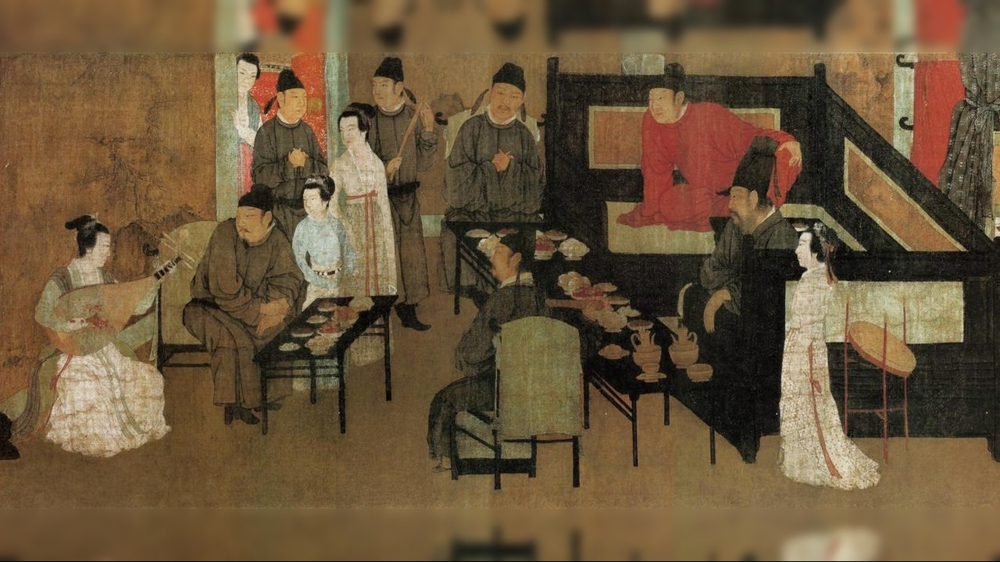
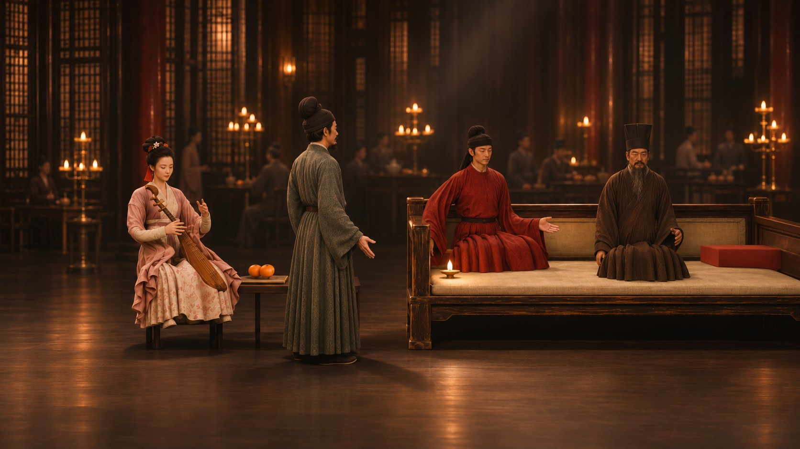

你刚才演的，是画卷的第一段「听乐」：李姬弹琵琶，红衣的状元郎粲坐在你身旁，满座宾客侧耳倾听。
画里的韩熙载，眉头始终没有舒展。
怎么做的：人物由 Hi3D 生成 3D 模型，在 Blender 里按原画摆好站位，作为每个镜头的构图底座；画面与动作由 AI 视频生成，首尾帧相接，串成一镜到底；拍手和节拍由网页实时识别。
《韩熙载夜宴图》第一幕 · 一部由你来演的互动影片
南唐末年，后主李煜猜忌大臣韩熙载，
派宫廷画师顾闳中夜入韩府，把宴会上的一切画下来，带回宫里。
韩熙载心知肚明。他只能夜夜笙歌，装作只爱享乐、毫无野心——
这样，皇帝才会放心。（据传世说法）
今夜，你就是韩熙载。画师就在席间，看着你。
别让宴会冷下来。
轻触任意处 · 开启琵琶声
点“入画”后浏览器会请求麦克风：允许后对着电脑鼓掌、欢呼；不想开麦，按空格或点屏幕也行
全程约 1 分半 · 请开声音 · 电脑 Chrome 体验最佳 · 右上角可调倍速